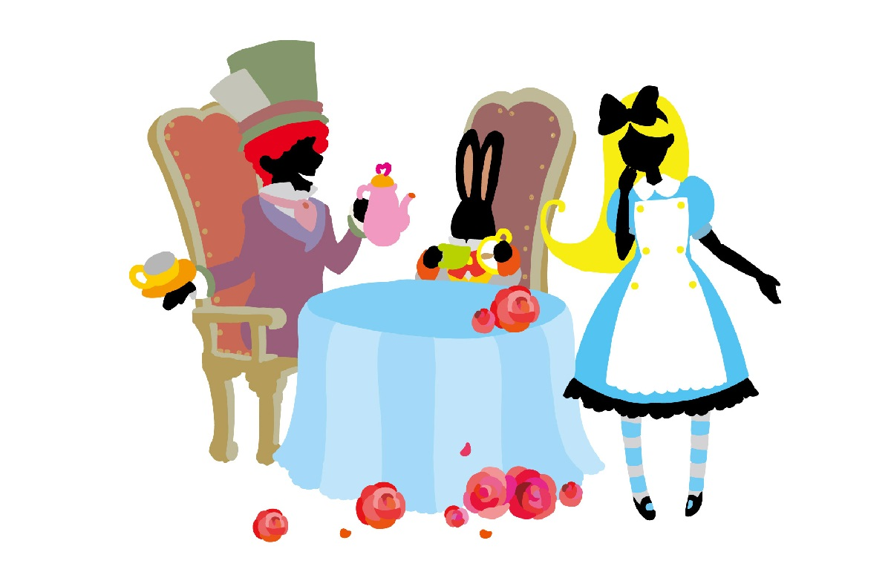

APS-ZOO

抽象的証明可能体系 (APS) と第二不完全性現象のための TeX/PDF 中心の小さな動物園です。
URL上のフォルダ名は歴史的に G2-ZOO ですが、この入口ページの公開名は APS-ZOO です。
← 自己嫌悪文のページへ戻る
◆ TeX PDFs
◆ Profile / slides
◆ Notes
PDF は Chrome 印刷ではなく LaTeX で作成しています。表は TeX の tabular / tabularx / longtable を使用し、HTML は入口と自己紹介だけにしています。